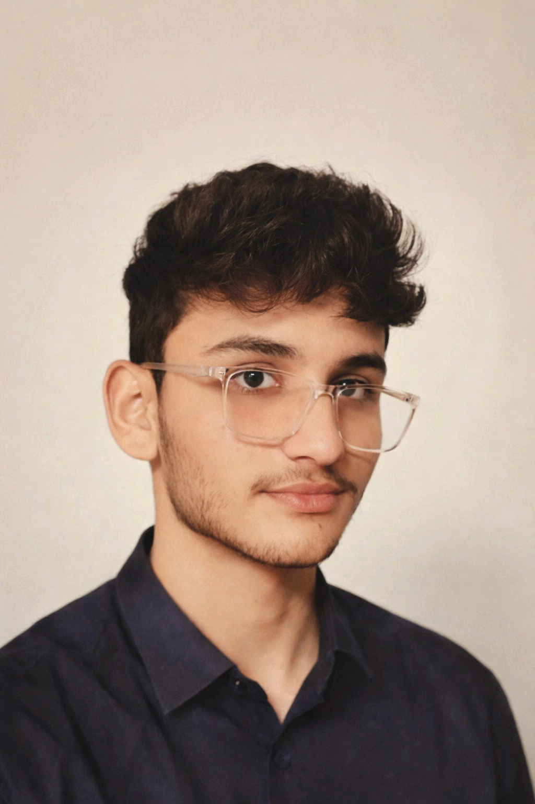

Muhammad Arham
Junior Web Developer
Passionate Web Developer with practical experience in HTML, CSS, JavaScript, PHP, MySQL and GitHub. Currently learning Laravel to become a Full Stack Developer.
Contact Information
Phone: +92 336 5487393
Gmail: arhamrajputrr@gmail.com
Location: Karachi, Pakistan
GitHub: github.com/arhamrajputrr-commits
Professional Summary
I am a passionate Junior Web Developer who enjoys creating modern and user-friendly websites. I have completed a Web Development Program and continuously improve my skills by learning new technologies like Java and Laravel. My goal is to become a professional Full Stack Web Developer.
Education
Web Development Program
The Bridge School
Completed - 2024
Current Studies
Advanced Web Development Course
HTML • CSS • JavaScript • PHP • Laravel
Matriculation
Completed
Technical Skills
Projects
Portfolio Website
Built a complete portfolio website using HTML, CSS, JavaScript, PHP and MySQL.
Nexora Electronics Website
Developed an electronics website as an HTML project with multiple pages including Home, Products, About and CV.
Java Practice Projects
Built console-based Java applications to improve programming and OOP concepts.
Soft Skills
- Problem Solving
- Communication
- Team Collaboration
- Time Management
- Critical Thinking
- Adaptability
Languages
- Urdu
- English
Career Objective
My objective is to become a successful Full Stack Web Developer by mastering modern web technologies and contributing to innovative software projects.